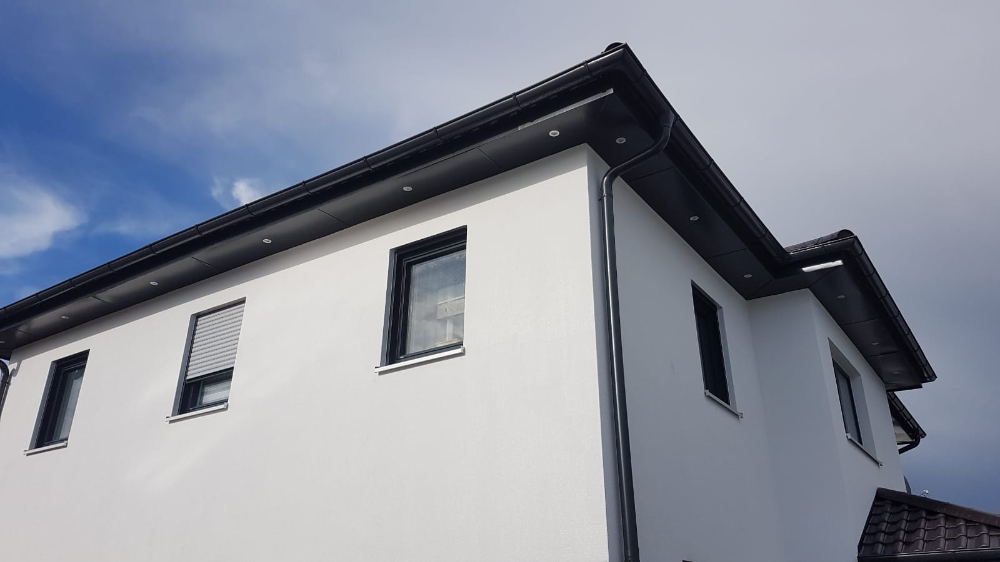
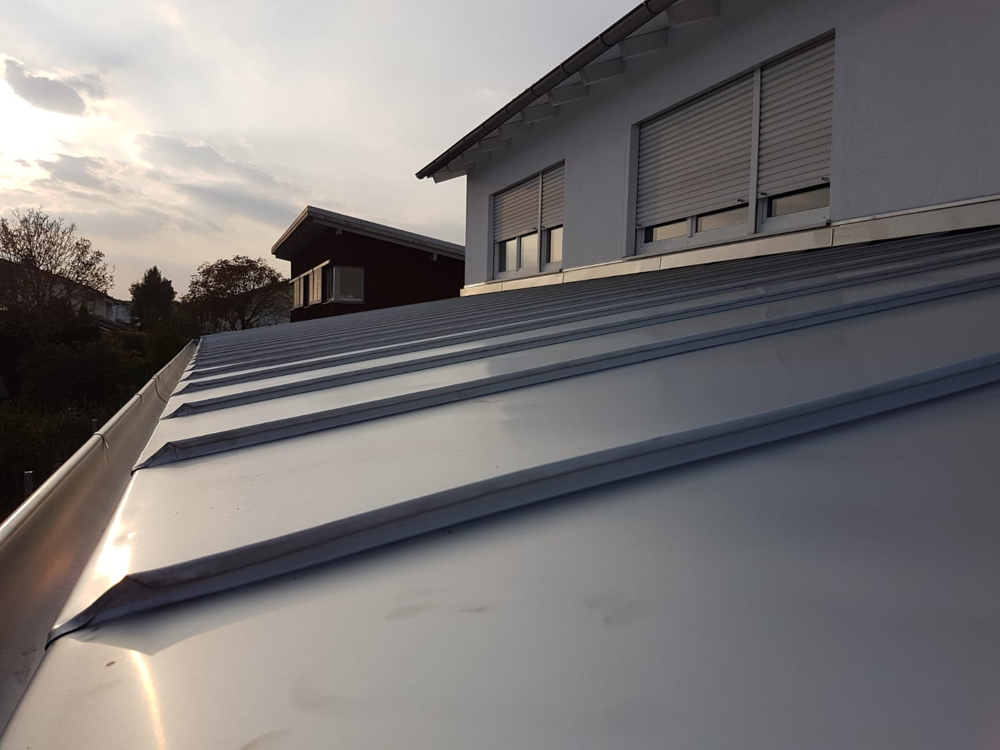
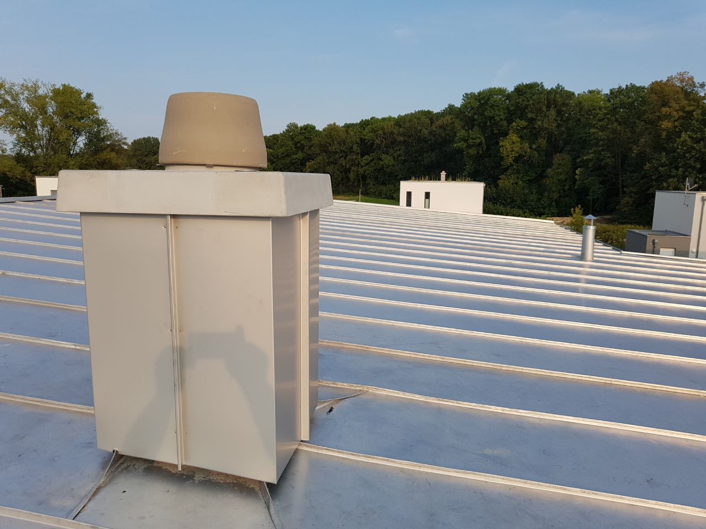
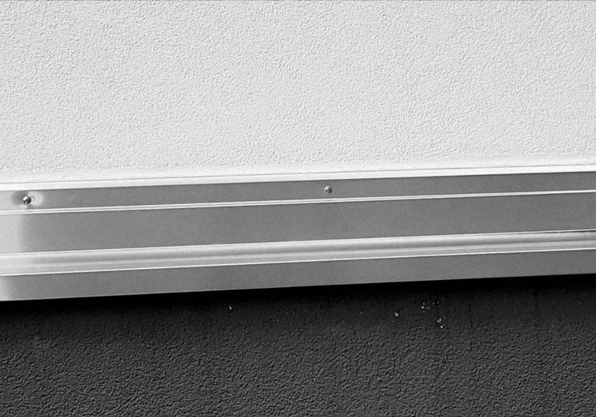
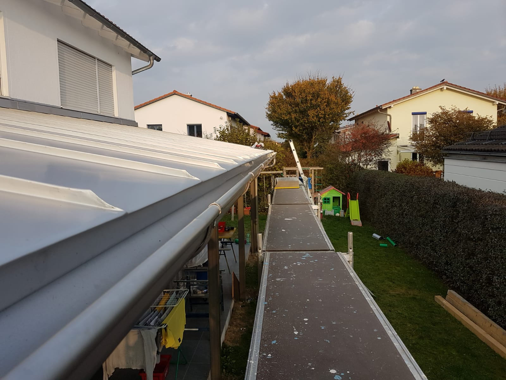
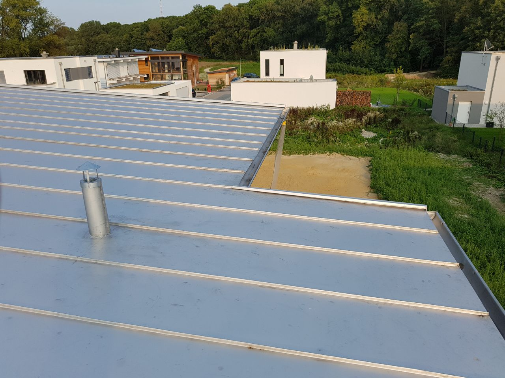
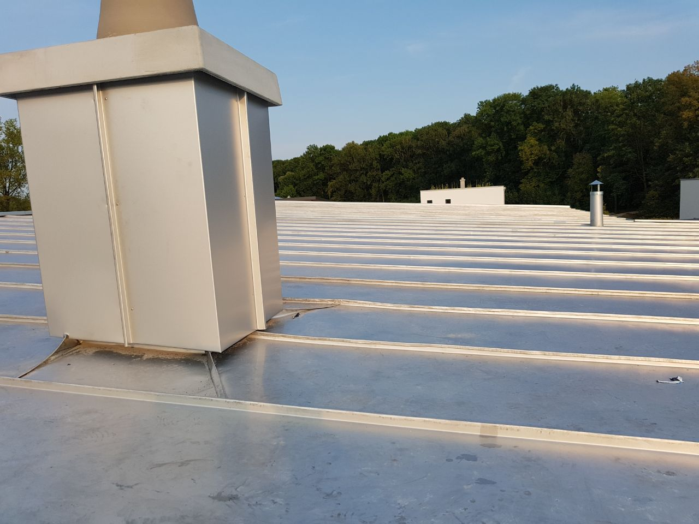

Bedachungen
Langlebige Dächer für Neubau und Sanierung.
- Metalldächer
- Flachdach
- Wärmedämmung

Spenglermeister Oliver Maier begutachtet Dächer, Abdichtungen und Blecharbeiten in Landshut und Umgebung. Sie erfahren, was der Schaden ist, woher er kommt und was die Behebung kostet. Für Ihre Versicherung, vor einem Kauf oder im Streit mit einem Handwerker.

Ein Gutachter, der selbst Dächer baut, erkennt Fehler dort, wo sie entstehen: an Falz, Anschluss und Abdichtung. Sie bekommen einen Bericht mit Fotos, den Versicherung, Verkäufer oder Handwerker nachvollziehen können.
Wir finden die Ursache von Undichtigkeit, Feuchte und Rissen und dokumentieren sie.
Schäden durch Sturm, Hagel und Schnee belegt, damit Ihre Versicherung sauber regulieren kann.
Wurde am Dach fachgerecht gearbeitet? Eine sachliche Einschätzung, wenn es Streit mit einem ausführenden Betrieb gibt.
Zustand von Dach, Rinnen und Abdichtung bewertet, bevor Sie eine Immobilie kaufen.
Kontrolle der Arbeiten am Dach während der Ausführung und Begleitung bei der Abnahme.
Der Zustand vor Baubeginn oder nach einem Unwetter, festgehalten in Fotos und Bericht.
Rufen Sie an oder schreiben Sie kurz, worum es geht. Fotos per Mail helfen bei der ersten Einschätzung.
Wir sehen uns Dach und Schadenstelle an und halten den Befund in Fotos und Notizen fest.
Sie bekommen Befund, Ursache, Empfehlung und eine Einschätzung der Kosten für die Behebung.
Ein Gutachten ist nur so gut wie der Blick fürs Detail. Darum prüfen wir jede Kante, jede Rinne und jeden Anschluss selbst.
Neben Gutachten führt der Betrieb Spenglerarbeiten selbst aus. Aus dieser Praxis kommt das Wissen, mit dem wir Dächer bewerten.
Langlebige Dächer für Neubau und Sanierung.

Saubere Blecharbeiten an jedem Anschluss.

Dicht gegen Regen, Schnee und Staunässe.

Schnelle Hilfe, bevor aus Feuchtigkeit ein Schaden wird.


Ihre Frage ist nicht dabei? Rufen Sie einfach an.
Sie schildern uns kurz den Anlass. Beim Ortstermin sehen wir uns Dach und Schadenstelle an und halten alles in Fotos und Notizen fest. Danach bekommen Sie einen schriftlichen Bericht mit Befund, Ursache und Empfehlung.
Das hängt vom Anlass und vom Umfang ab. Nach einem kurzen Gespräch nennen wir Ihnen den Preis, bevor wir anfangen.
Ein Angebot sagt, was eine Reparatur kostet. Ein Gutachten klärt, was passiert ist und warum. Das brauchen Sie, wenn eine Versicherung, ein Verkäufer oder ein anderer Betrieb den Schaden anerkennen soll.
Melden Sie sich bitte telefonisch. Wir sagen Ihnen sofort, wann wir vor Ort sein können, und raten Ihnen, was Sie bis dahin selbst festhalten sollten.
Wir arbeiten in Landshut und im Umland. Für größere Aufträge fahren wir auch weiter. Fragen Sie einfach nach.
Ja, als Spenglerei führen wir Arbeiten an Dach, Rinne und Abdichtung auch selbst aus. Sprechen Sie uns darauf an.
Schildern Sie kurz den Anlass. Sie bekommen eine ehrliche erste Einschätzung und erfahren, ob ein Gutachten für Sie sinnvoll ist.
Preis steht fest, bevor wir anfangen